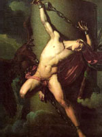

Прометей ("що передбачає"), в грецькій міфології син титану Япета і океаніди Клімени, за іншою версією - Азії або богині правосуддя Феміди. Він встав на сторону свого двоюрідного брата Зевса під час боротьби за владу з Кроносом.
Долю титану визначила його прихильність до роду людей, творцем яких він був за цілою низкою свідчень і яким він дарував божественний вогонь, захований громовержцем Зевсом.
Прометей викрав його і приніс на землю. Розгніваний Зевс прикував бунтівного титану до скелі на Кавказі, де орел викльовував йому печінку, яка за ніч виростала знову.
Прометей був звільнений Гераклом за велінням Зевса, в обмін на таємницю, що син морської німфи Фетіди, за якою одночасно доглядали Зевс і Посейдон, стане могутнішим батька. Видавши Фетиду за смертного царя, боги захистили себе від небезпеки, так як народжений Фетідою Ахілл хоч і став великим воїном, але все ж був смертний.
Прометей дав людям вогонь, найважливіший елемент цивілізації, правда, мав і згубні наслідки: поряд з виготовленням знарядь праці в палаючих ковальських горнах протягом століть кувалася зброя війни.